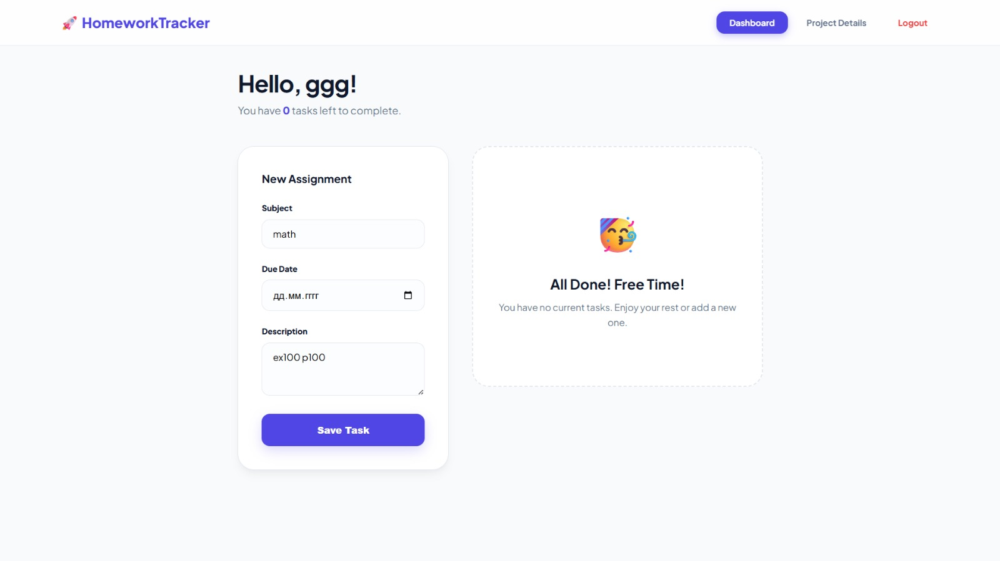
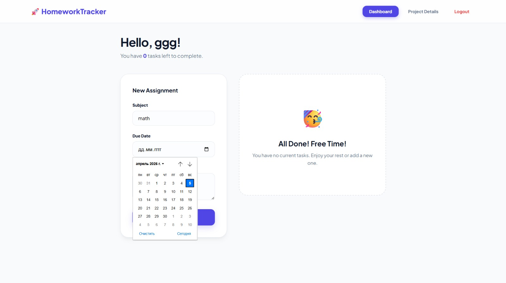
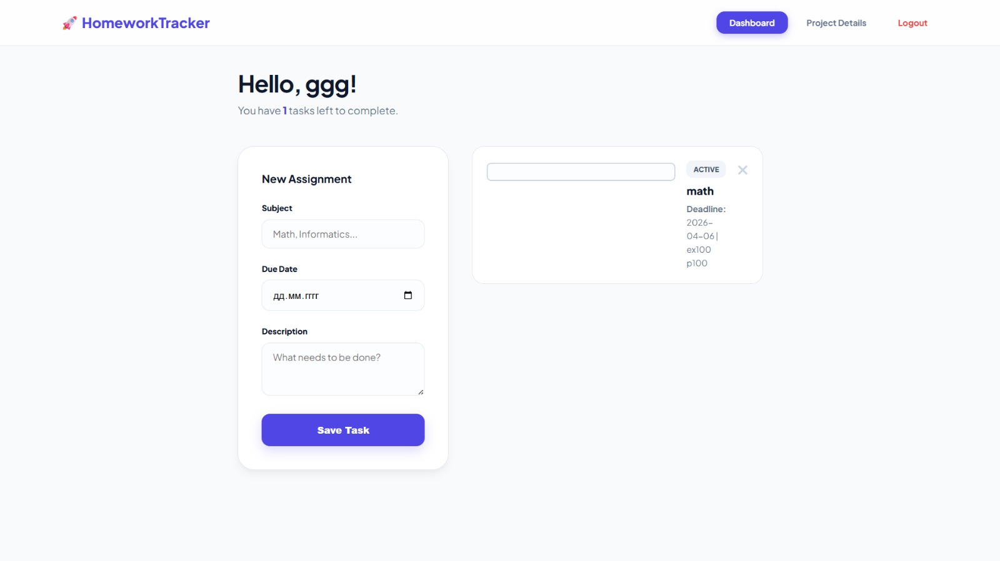
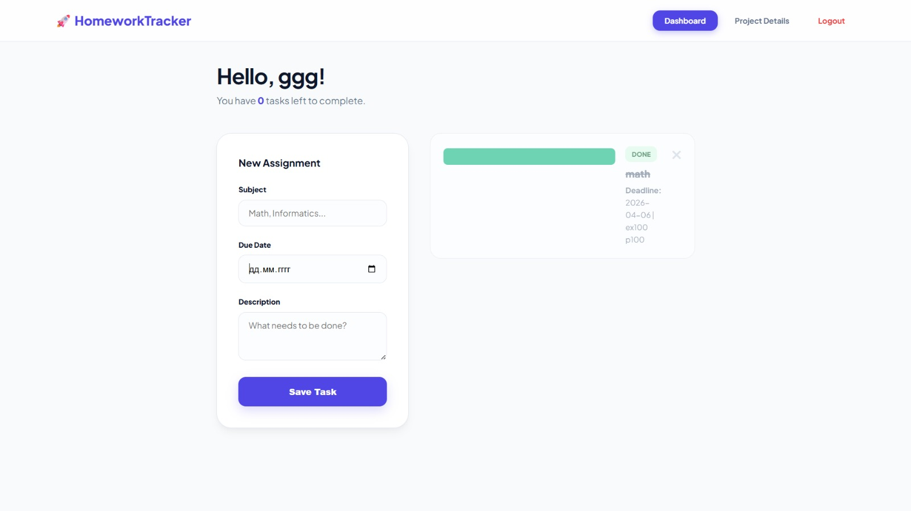

01. Project Vision
HomeworkTracker was conceived as a response to the fragmented nature of current school platforms. While systems like Edupage focus on administrative reporting, students are left without a personal tool for self-management.
Our goal was to create a centralized "Academic OS" where a student can document every specific instruction, deadline, and resource in one place. By focusing on a minimalist UI, we eliminate "app fatigue" and allow users to focus on what matters: their studies.
The Problem
Modern students manage over 10 subjects simultaneously. Information is often lost across messengers, paper diaries, and verbal instructions. This leads to missed deadlines and unnecessary stress.
The Solution: A web-based hub that follows you from the school laptop to your home computer, ensuring constant access to your task list.
02. Core Functionality
Explore the architecture of the HomeworkTracker system through our interactive gallery.





Smart Sorting: Tasks are prioritized by urgency.
Archiving: Review completed tasks to track progress.
03. Full Sponsor Interview
04. Technical Architecture
We chose a robust tech stack to ensure the platform is both fast and scalable. The frontend is built for speed, while the backend handles complex data logic.
Development Roadmap
- Phase 1: UI Wireframing & Logic Mapping (Week 1)
- Phase 2: Database Integration & Task CRUD (Week 2)
- Phase 3: Beta Testing & UI Polishing (Week 3)
- Phase 4: Final Launch & Documentation (Week 4)
05. The Minds Behind the Project